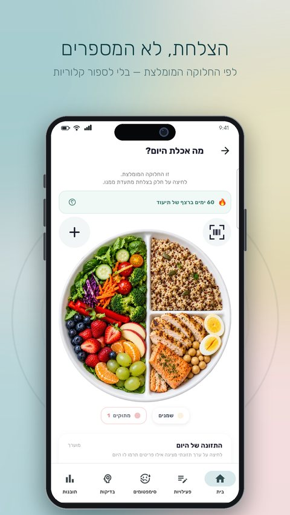

Chronicle
מעקב בריאות ותסמינים — איננו מפעילים שרתים ואיננו מקבלים את הנתונים.



מה האפליקציה עושה
Chronicle מאפשרת לתעד לאורך זמן את מה שמשפיע על איך שאת/ה מרגיש/ה, ולראות את הקשרים ביניהם:
- סימפטומים, תסמינים, מצב רוח ושינה;
- תזונה, פעילות גופנית ותרופות;
- מדדים ביומטריים, בדיקות דם ומבחנים קוגניטיביים;
- תובנות ודוחות תקופתיים שמבוססים על מה שתיעדת.
ייבוא תוצאות בדיקות דם מקובצי PDF
את קובץ ה-PDF של תוצאות הבדיקות מקופת החולים אפשר לייבא ישירות לאפליקציה: Chronicle קוראת את שמות הבדיקות, את התוצאות, את טווחי הייחוס ואת התאריכים, ושומרת אותם כמדדים שאפשר לעקוב אחריהם לאורך זמן — בלי להקליד שורה אחת.
הקריאה מתבצעת במכשיר עצמו. הקובץ אינו נשלח לשום מקום.
פרטיות היא המבנה, לא הבטחה
אין שרתים, אין חשבונות משתמש, אין פרסום, אין אנליטיקה ואין כלי מעקב. המידע נשמר מקומית במכשיר. אם גיבוי מערכת ההפעלה פעיל, עותק נשמר בחשבון הענן הפרטי שלך — לא אצלנו, ואיננו מקבלים ממנו דבר.
אינו ייעוץ רפואי
Chronicle היא כלי מידע ורווחה. היא אינה מכשיר רפואי ואינה מהווה ייעוץ, אבחון או טיפול רפואי. בכל שאלה רפואית יש לפנות לאיש מקצוע.
Chronicle
A personal health and symptom record — we run no servers and never receive your data.
What it does
Chronicle lets you record what affects how you feel, over time, and see how those things relate to each other:
- symptoms, mood and sleep;
- nutrition, exercise and medications;
- biometrics, blood-test results and cognitive tests;
- insights and periodic reports built from what you logged.
Privacy is the architecture, not a promise
No servers, no user accounts, no ads, no analytics, no trackers. Everything is stored locally on the device. If your operating system's backup is on, a copy also sits in your own cloud account — not ours, and we receive nothing from it.
Not medical advice
Chronicle is an information and wellbeing tool. It is not a medical device and does not provide medical advice, diagnosis or treatment.